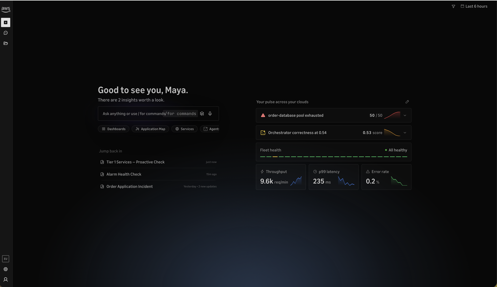
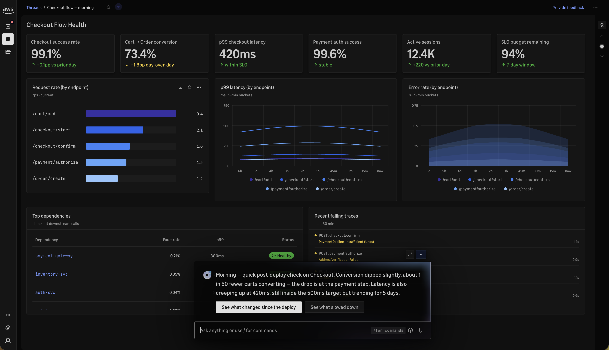
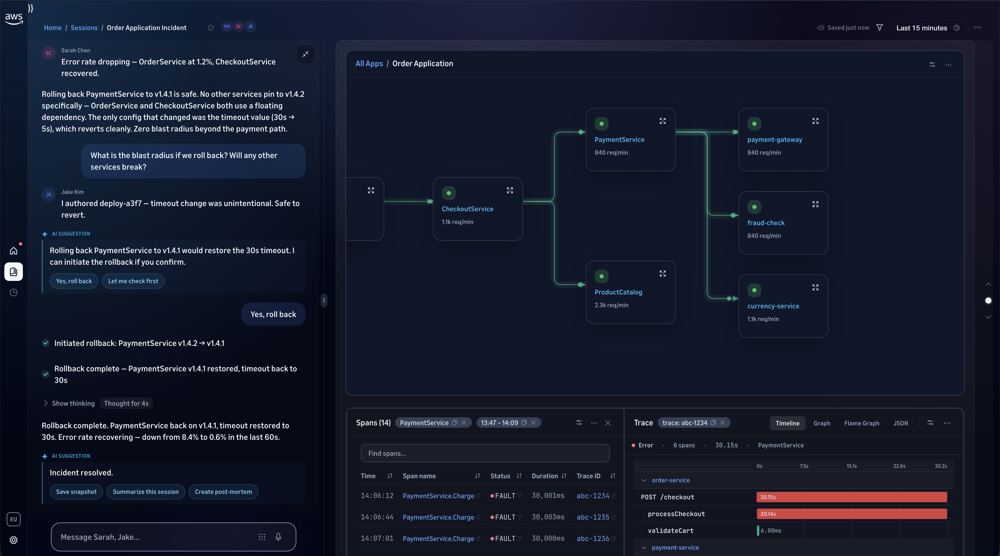
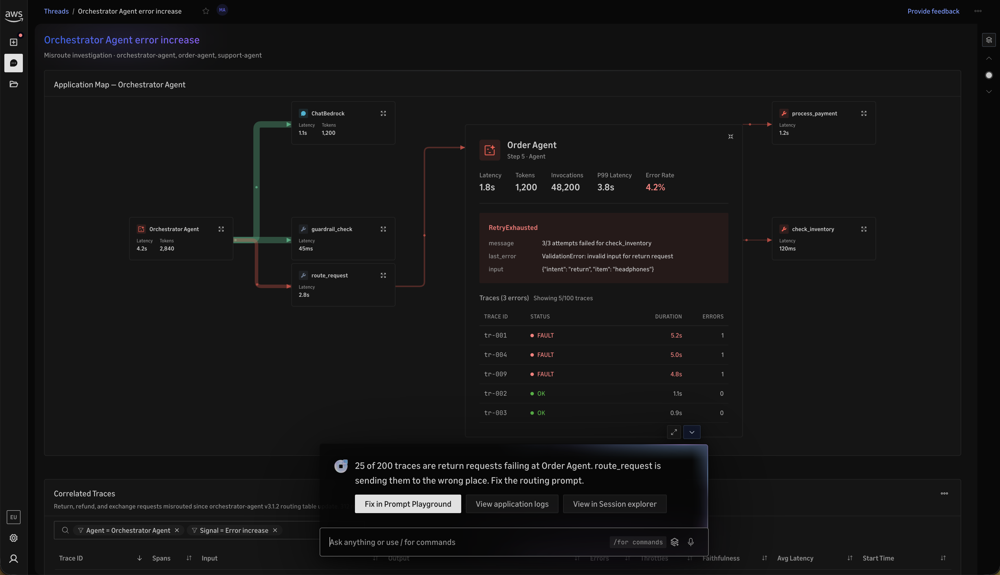
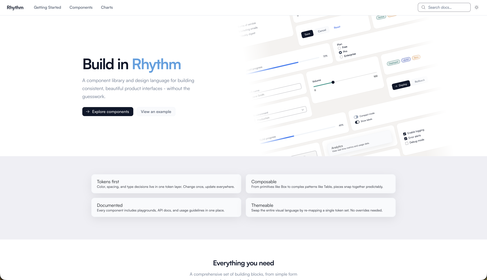

How I designed an agentic investigation platform that compresses 90-minute manual investigations into 5-minute AI-assisted decisions - while keeping the human in command.
Operators spend 30–90 minutes per incident manually correlating metrics, logs, and traces across disconnected dashboards. The actual decision takes 30 seconds - finding the evidence takes an hour.
Led end-to-end design of the agentic investigation experience - AI interaction model, collaborative sessions, service topology, landing experience, and the Rhythm Core design system serving 12 designers across 5 product domains.
An AI-native workspace where an agent proactively surfaces anomalies, correlates telemetry, and suggests resolution paths - compressing a 90-minute investigation into a 5-minute decision while keeping the human in command of every critical action.
~73% MTTR reduction. Design system adopted across 5 domains. 3 collaboration model iterations. Validated with internal customers through rapid testing cycles.
When an SLO breach fires at 2 AM, here's what an experienced operator actually does:
The breakthrough isn't replacing the operator's judgment. It's eliminating the 30-90 minutes of manual correlation that precedes their decision. An AI agent that proactively detects anomalies, correlates telemetry, surfaces probable root cause, and suggests resolution actions - compresses a 90-minute hunt into a 5-minute decision.
The operator still decides. The AI does the legwork.
Acquired Eppo - built experimentation directly into observability. Combining business metrics with system health in one view.
Converged AI monitoring with security - hallucination detection, bias drift, and PII leakage alongside traces and logs.
AI Gateway with MCP control plane - automatic blocking of unapproved AI actions via "approved-only dropdowns."
Voice + camera as default search. Text-first interfaces replaced. Gemma 4 runs agentic workflows on-device.
How might we design an investigation experience where AI eliminates the manual correlation work - so operators spend their attention on decisions, not on data-hunting?
AI observes, surfaces, and suggests - but waits for explicit human confirmation before critical actions. The operator stays in command.
"Divide tasks between human and AI deliberately, not by default" - AgXD
The agent works before the human arrives. When an operator opens Omni, probable root cause is already surfaced with supporting evidence. First interaction is a decision, not a search.
Service, time range, and state persist across every surface. No re-entry, no context loss, no starting over.
"Never ask for information the system already has" - IxD
Humans and AI in a single stream. @AI to invoke. Deep link to collaborate. No mode-switching between team chat and AI mode.
"Give users one clear home reachable from anywhere" - IxD
Replaced the dashboard-first model with a session-based workspace where AI proactively surfaces anomalies, operators collaborate in real-time, and the interface adapts to investigation context.
Old: open a blank dashboard, figure out what to look at. New: the agent has already been monitoring. Operators land with proactive insights, anomalies surfaced, and recent sessions ready to resume. First interaction is a decision, not a query.

Each investigation is a session that auto-creates on first interaction. No upfront naming. Full context captured automatically - traces, metrics, logs, chat, AI suggestions. Persistent, shareable via deep link, resumable. Nothing is ever lost.

Separate Team/AI toggle. Private messages. Role management.
Learning: mode-switching adds overhead in a crisis
Unified chat. @AI mentions. Proactive suggestions. Multi-step invite.
Learning: invite flow too heavy for fast incidents
Unified chat. @AI invoke. AI waits for confirmation. Shareable deep link only.
✓ Simple · Human-in-the-loop · Zero friction
V3 insight: during real incidents, operators paste a link in Slack - they don't open settings panels. The entire invite flow was replaced with a shareable URL.

Dynamic service map showing incident blast radius in real-time. Every node is interactive - click to see metrics, logs, traces, alarms, and dependencies in one integrated panel. Investigation follows the entity, not the data type.

12 designers across 5 domains needed shared infrastructure. Led creation of Rhythm Core - component library on Cloudscape Core with custom token layer. Governed as a product with its own roadmap, versioning, and cross-team governance.

Conducted moderated usability testing with 5 internal AWS engineers - all with zero prior Omni experience. 15 tasks mapped to real incident response workflows. The study validated the agentic model while surfacing refinement opportunities.
From the DelightLab intelligence system - real customer feedback that validated our design direction before and during testing:
CUSTOMER REQUEST
"Allow users to create shareable links that auto resolve to the view they are looking at"
→ Validated: V3 deep link collaboration model
CUSTOMER REQUEST
"While the agent is thinking, it should show something that lets the user know there is something happening behind the scenes"
→ Validated: AI status indicators and streaming response patterns
CUSTOMER REQUEST
"Format agent responses as structured cards instead of unhelpful JSON blobs"
→ Validated: Structured suggestion cards with Confirm/Dismiss actions
CUSTOMER REQUEST
"Allow users to click a button on any panel which triggers the Agent to explain that view"
→ Validated: @AI contextual invoke pattern
Rapid validation-to-fix cycles in progress. Aggressive re-testing underway.
A 73% reduction in mean time to resolution isn't a UX metric. It's a business outcome. For enterprise customers, the difference between 90 minutes and 5 minutes is measurable in SLA compliance, engineering hours, and customer trust.
The operator still makes the decision. The AI eliminates the 85 minutes of manual work that precedes it.
Before any design work starts, I talk to stakeholders and users to understand what's actually broken - not just what was asked for. The brief is a starting point, not the answer.
I test with real users on real tasks. The gap between what someone says they'd do and what they actually do is where the real problems live. That's what I'm looking for.
I agree on what success looks like, who we're designing for, and what principles will guide decisions - before touching a component. This is what makes design reviews fast and clear.
All exploration happens in Kiro IDE - live components from day one, not static mockups. At least three directions get built and compared. The ones that don't work are just as important as the ones that do.
I test prototypes with real users, rank what breaks by severity, fix in priority order, and test again. A finding only matters if it changes something. Untested assumptions stay assumptions.
After launch, I check the design against the success metrics set in phase one - not as a formality, but because that's the only honest way to know if the work did its job.